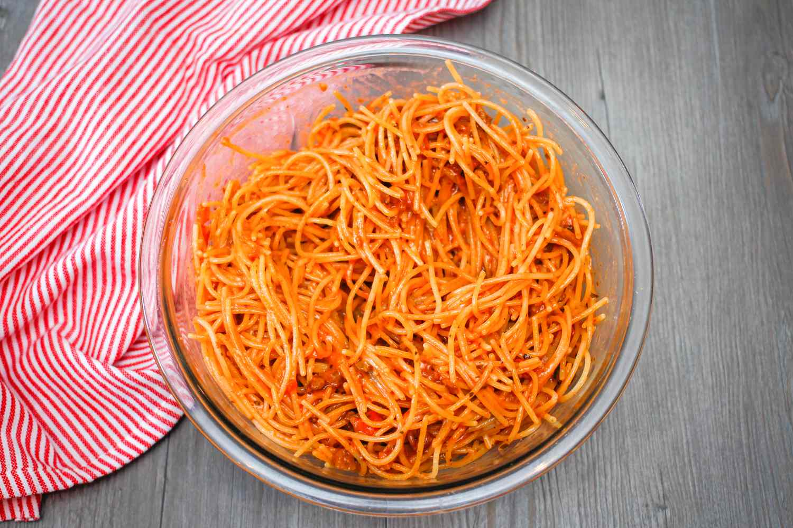

Spaghetti

I love it with ketchup cuz it is just yummy
Ingredients
- 200g spaghetti
- 4 cups water
- Salt(According to taste)
- 2 tablespoons olive oil
- 1 medium onion
- 2-3 garlic cloves
- 3 tomatoes
- 1 teaspoon dried basil
- 1 teaspoon dried oregano
- 1 pinch of sugar
- Pepper(According to taste)
Cooking
- Boil water, add salt, cook spaghetti for 8-10 minutes.
- Cook onion and garlic in olive oil, add crushed tomatoes and spices, simmer for 10-15 minutes.
- Toss spaghetti with sauce, adjust consistency with reserved pasta water.